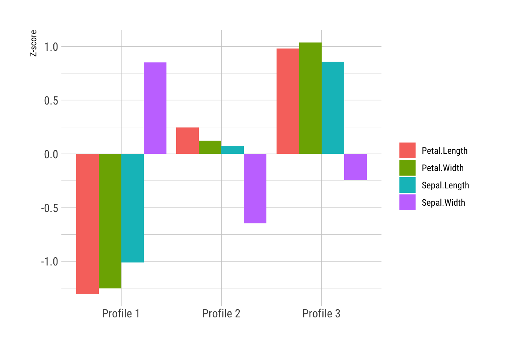

Latent Profile Analysis using MCLUST (in R)
Hi there! This is Jihong. This is a webpage folked from JOSHUA M. ROSENBERG. It aims to provid a very clear example about how to conduct Latent Profile Analysis using MCLUST in r.
1 Import data and load packages
data("iris")
df <- select(iris, -Species) # 4 variables
explore_model_fit <- function(df, n_profiles_range = 1:9,
model_names = c("EII", "VVI", "EEE", "VVV")) {
x <- mclustBIC(df, G = n_profiles_range, modelNames = model_names)
y <- x %>%
as.data.frame.matrix() %>%
rownames_to_column("n_profiles") %>%
rename(`Constrained variance, fixed covariance` = EII,
`Freed variance, fixed covariance` = VVI,
`Constrained variance, constrained covariance` = EEE,
`Freed variance, freed covariance` = VVV)
y
}
fit_output <- explore_model_fit(df, n_profiles_range = 1:6)
library(forcats)
to_plot <- fit_output %>%
gather(`Covariance matrix structure`, val, -n_profiles) %>%
mutate(
`Covariance matrix structure` = as.factor(`Covariance matrix structure`
),
val = abs(val))
# this is to make the BIC values positive (to align with more common formula / interpretation of BIC)
ggplot(to_plot, aes(x = n_profiles, y = val, color = `Covariance matrix structure`, group = `Covariance matrix structure`)) +
geom_line() +
geom_point() +
ylab("BIC (smaller value is better)") +
theme_ipsum_rc()
From red to purple, the models become less constrained (more free). It appears that a two or three profile (mixture component) model with freely-estimated residual variances and covariances, or a four profile model with constrained residual covariances and variances, fit best (based on interpreting the BIC).
Given this, we can fit (and inspect) a model, say, the three profile model with freely-estimated residual variance and covariances.
create_profiles_mclust <- function(df,
n_profiles,
variance_structure = "freed",
covariance_structure = "freed"){
if (variance_structure == "constrained" & covariance_structure == "fixed") {
model_name <- "EEI"
} else if (variance_structure == "freed" & covariance_structure == "fixed") {
model_name <- "VVI"
} else if (variance_structure == "constrained" & covariance_structure == "constrained") {
model_name <- "EEE"
} else if (variance_structure == "freed" & covariance_structure == "freed") {
model_name <- "VVV"
} else if (variance_structure == "fixed") {
stop("variance_structure cannot equal 'fixed' using this function; change this to 'constrained' or 'freed' or try one of the models from mclust::Mclust()")
}
x <- Mclust(df, G = n_profiles, modelNames = model_name)
print(summary(x))
dff <- bind_cols(df, classification = x$classification)
proc_df <- dff %>%
mutate_at(vars(-classification), scale) %>%
group_by(classification) %>%
summarize_all(funs(mean)) %>%
mutate(classification = paste0("Profile ", 1:n_profiles)) %>%
mutate_at(vars(-classification), function(x) round(x, 3)) %>%
rename(profile = classification)
return(proc_df)
}
m3 <- create_profiles_mclust(df, 3, variance_structure = "freed", covariance_structure = "freed")----------------------------------------------------
Gaussian finite mixture model fitted by EM algorithm
----------------------------------------------------
Mclust VVV (ellipsoidal, varying volume, shape, and orientation) model with 3
components:
log-likelihood n df BIC ICL
-180.1858 150 44 -580.8396 -584.0522
Clustering table:
1 2 3
50 45 55 We can then plot the mean values for the variables used to estimate the model for each of the two profiles. Of course, there are other models that we may want to inspect with different covariance matrix structures or profile numbers.
m3 %>%
gather(key, val, -profile) %>%
ggplot(aes(x = profile, y = val, fill = key, group = key)) +
geom_col(position = "dodge") +
ylab("Z-score") +
xlab("") +
scale_fill_discrete("") +
theme_ipsum_rc()
One big question: Are the residual covariance structures correctly specified? There are a lot of possible specifications (see help file here). I think they are right, based on their definitions, inspecting their covariance matrices, and inspecting their plots. But they might not be.